Inside a Salad Spinner
Motion conversions in your kitchen
Read spotlight →Guiding questionHow are mechanisms present in everyday products?
Mechanisms are how designers cheat. You cannot create energy, but you can trade force for distance, speed for torque, and one kind of motion for another, and almost every product that moves is built on that trade. A pair of scissors, a bike derailleur, a car window, a nail clipper and an excavator are all running the same handful of tricks at different scales.
What this topic gives you is the ability to look at something moving and explain why it moves that way, which is harder and more useful than it sounds. Most students can identify a gear. Far fewer can explain what the gear ratio is doing for the user, and that explanation is the actual assessable skill, here and in B3.3 and in any IA involving something that moves. There is also a real satisfaction to this material that I would encourage you to chase. Mechanisms are old, the vocabulary has barely changed in centuries, and once you have it you get to spend the rest of your life quietly identifying cam profiles in things.
Students must be able toIdentify the four basic types of mechanical motion: linear; rotary; oscillating; and reciprocating.
All movement in a mechanical system can be described using four fundamental motion types:
Converting between motion types is one of the core tasks of mechanical design. A petrol engine converts reciprocating piston motion into rotary crankshaft motion. A rack and pinion converts rotary into linear. A cam converts rotary into reciprocating. Understanding which mechanism achieves which conversion is essential for designing functional products.
Select a product below, then match it to both its mechanism type and the motion type it produces. Both parts need to be right before it's fully matched. (Mechanism types are covered in more depth in 3.3.4, further down this page.)
Students must be able toDescribe inputs, processes and outputs in the context of mechanical systems.
Every mechanical system can be described using an input–process–output (IPO) model:
Examples across product types:
| Product | Input | Process | Output |
|---|---|---|---|
| Bicycle | Rotary (pedal force) | Chain and sprocket | Rotary (rear wheel) |
| Can opener | Rotary (handle turning) | Lever + wedge + wheel/axle | Linear (blade through lid) |
| Petrol engine | Linear (combustion force on piston) | Connecting rod + crankshaft | Rotary (crankshaft) |
| Scissor lift | Linear (hydraulic actuator) | Parallel linkage (criss-cross X) | Linear (platform rises) |
| Car steering | Rotary (steering wheel) | Rack and pinion | Linear (tie rods move) |
The IPO model helps designers identify which mechanism to choose. If an input is rotary and an output must be linear, the process must include a rotary-to-linear converter (rack and pinion, cam, crank and slider). If force magnitude must change, a lever, pulley, or gear ratio provides the process step.
Simple machines are the primitive building blocks: inclined plane, wedge, lever, pulley, wheel and axle, and screw. Every complex mechanism can be traced back to combinations of these six.
Students must be able toOutline a mechanical advantage and suggest how simple mechanical systems may improve performance in terms of function and efficiency.
Mechanical Advantage (MA) is the ratio of the output force produced by a machine to the input force applied by the user:
MA = Output force / Input force = Fout / Fin
MA > 1 means the machine multiplies force (you apply less force than the load requires). MA < 1 means you apply more force than the load, but gain speed or distance. The fundamental trade-off is: you cannot get more work out than you put in. Increasing force means the input must travel a greater distance; increasing speed means less force.
Ideal Mechanical Advantage (IMA) assumes a frictionless, perfect machine. It is calculated from geometry (distances), not actual forces:
IMA = Distance input travels / Distance output travels
Real machines have friction, so Actual Mechanical Advantage (AMA) is always less than IMA. Efficiency = AMA / IMA × 100%.
Inclined plane: Spreads the work of lifting over a longer sloped distance, reducing the force required at each instant.
IMA = Slope length (L) / Vertical height (h)
Example from the chapter: L = 1.46 m, h = 0.5 m → IMA = 1.46 / 0.5 = 2.92. The user applies 2.92 times less force than lifting straight up, but must push the load 1.46 m along the slope rather than 0.5 m straight up.
Wedge: Two inclined planes placed back-to-back. When driven forward, the wedge converts a forward force into two outward (splitting) forces perpendicular to the wedge faces. MA depends on the wedge angle: the thinner the wedge, the greater the MA, but the further it must be driven. Examples: Axe head, knife blade, wood chisel, door stop, ZIP fastener teeth.
Pulleys: A fixed pulley changes the direction of force but not its magnitude (MA = 1). A movable pulley provides MA = 2, because the load is supported by two rope segments. A block and tackle combines multiple movable pulleys; the MA equals the number of rope segments supporting the movable block. A 4-rope block and tackle gives MA = 4 (you lift a 400 N load with 100 N, but must pull 4× the lifting distance).
Wheel and axle: Applies a large effort at the rim (wheel) to produce a larger force at the axle, or vice versa. MA = radius of wheel / radius of axle. Examples: Steering wheel (large wheel radius → small force needed), screwdriver handle (wide handle → large torque at tip), doorknob, winch.
Students must be able toIdentify gear-driven, belt-driven, cam, lever and linkage systems.
Mechanical systems are grouped into five broad families by how they transmit and transform motion and force:
| System type | Primary function | Motion change | Example |
|---|---|---|---|
| Gear-driven | Transmit rotary motion between shafts | Speed, torque, direction, or shaft angle | Bicycle derailleur, automotive gearbox |
| Belt-driven | Transmit power between separated pulleys via a flexible belt or chain | Speed, torque (via pulley ratio) | Conveyor, timing belt, bicycle chain |
| Cam | Convert rotary motion to controlled reciprocating motion via a profiled surface | Rotary → reciprocating (shape-dependent) | Engine valve timing, music box, toy |
| Lever | Amplify force or speed using a beam and pivot | Force magnitude, direction | Crowbar, scissors, tweezers |
| Linkage | Transmit or transform motion between moving parts using rigid links and pivots | Direction and path of movement | Scissor lift, bicycle brakes, windscreen wipers |
Speed and torque are always traded against each other (assuming constant power). Gearing up (small gear driving large gear) increases torque but reduces speed. Gearing down (large driving small) increases speed but reduces torque. This is the same principle as the inclined plane: gain force, lose distance, or gain speed, lose force.
Direction changes are achieved by bevel gears (90° shaft angle), reverse linkages (opposite linear direction), rack and pinion (rotary ↔ linear), bell-crank linkages (90° direction change), and idler gears (same shaft alignment, reversed rotation).
Students must be able toExplain the basic principles of mechanical motion and discuss how gears, pulleys, cams, levers and linkages can be combined to create complex mechanical systems.
Simple machines become complex mechanical systems when two or more are combined in series or in parallel, each stage transforming the motion or force before passing it to the next. The output of one stage becomes the input of the next.
Everyday complex system examples:
Historical context: Georgius Agricola, De Re Metallica (1556): Agricola's landmark mining engineering treatise documented waterwheel-powered ore-crushing machines. His woodcut illustrations show waterwheels (rotary), linked via gear trains to hammers (reciprocating), with cams on the shaft converting rotary to the repeated hammer blows needed to crush ore. This is essentially the same system as a modern stamping press; the technology is half a millennium old.
Design principle: When analysing a complex mechanism, identify the chain from input to output. At each stage ask: what type of motion enters? What type must leave? What mechanism performs that conversion? This systematic decomposition is the foundation of mechanism design.
Motion conversions in your kitchen
Read spotlight →Students must be able toIdentify the different types of gear systems (spur, bevel, rack and pinion, worm, ratchet and pawl, idler and compound) and their components, and outline how they are used providing examples.
Gears transmit rotary motion and torque between shafts. When two gears mesh, their teeth interlock: one tooth of the driving gear pushes one tooth of the driven gear. The gear ratio governs the speed and torque relationship:
Gear ratio = Teeth on driven gear / Teeth on driving gear = Speed of driving gear / Speed of driven gear
A 40-tooth driven gear meshing with a 20-tooth driving gear has a ratio of 2:1; the driven gear turns at half the speed but with double the torque.
The main gear types are:
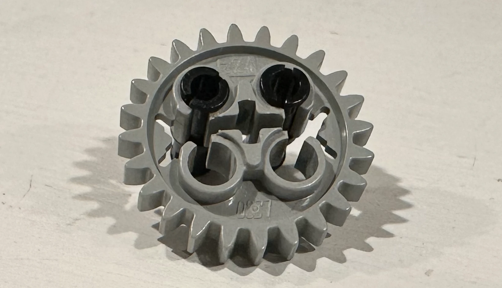
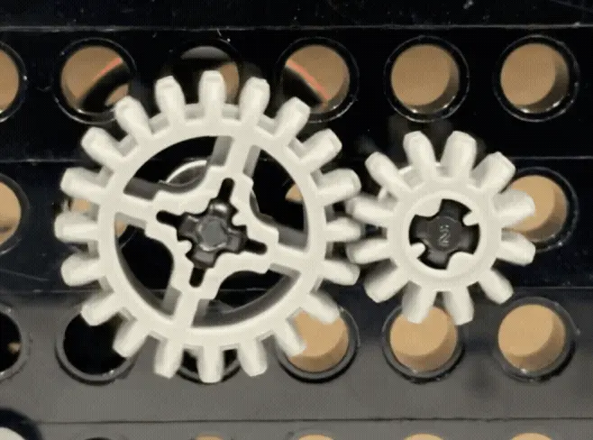
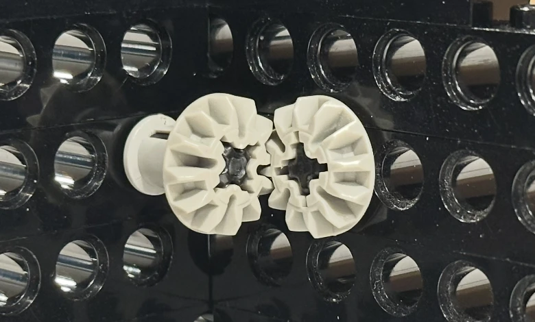
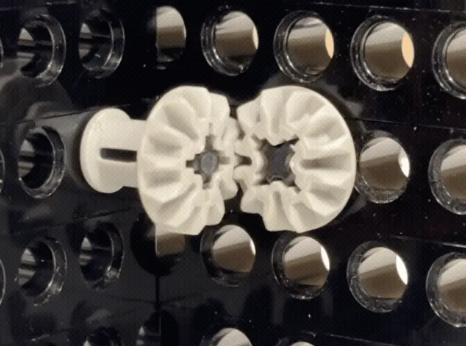
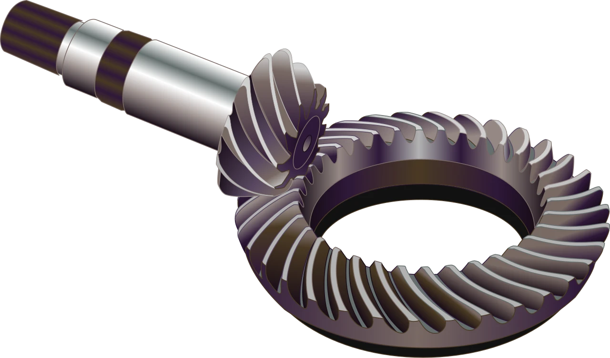
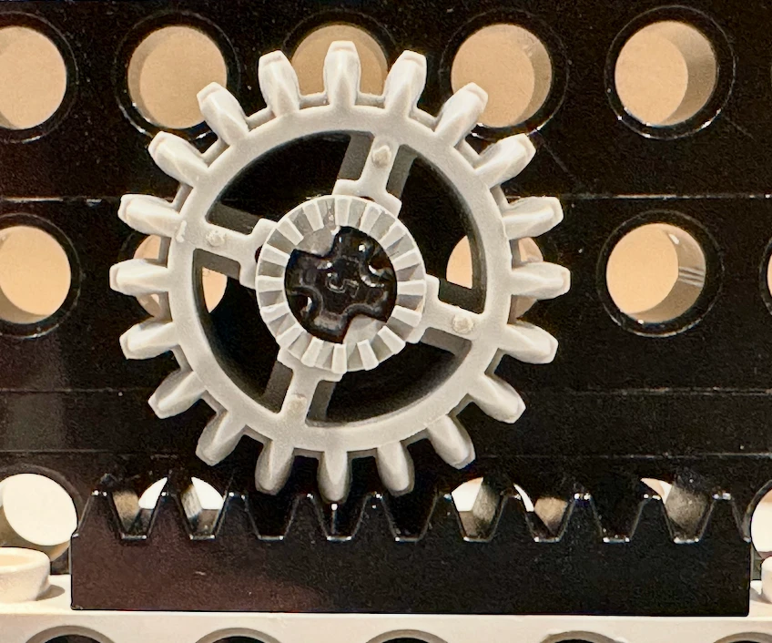
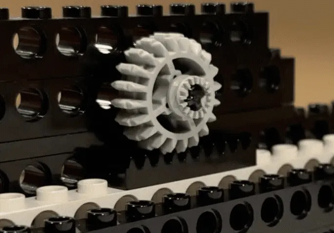
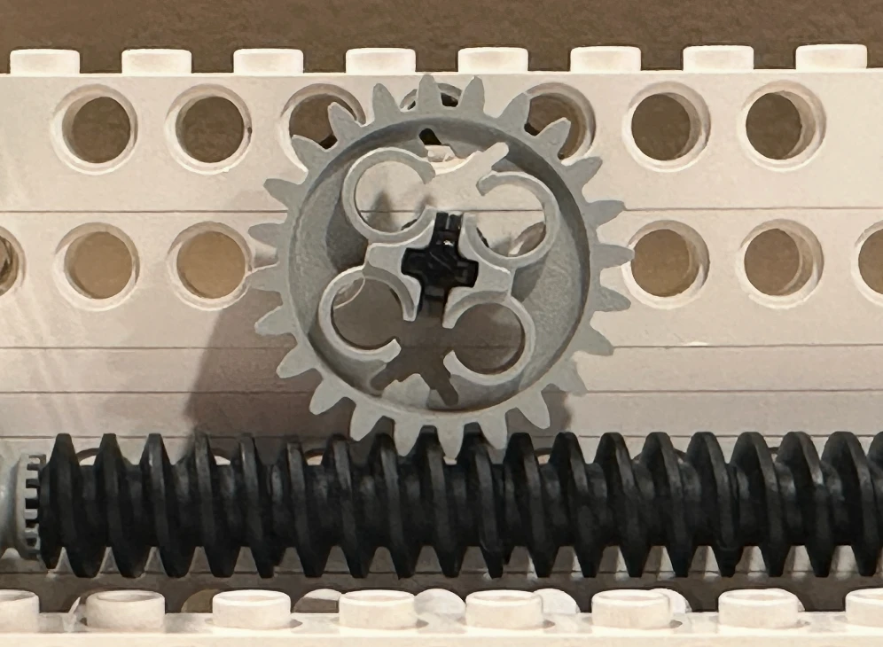
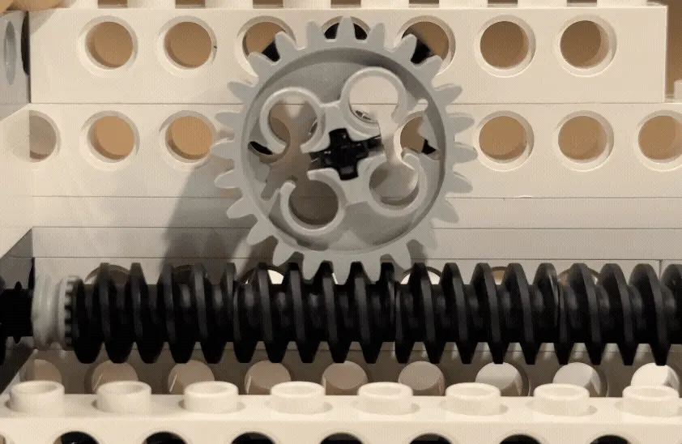
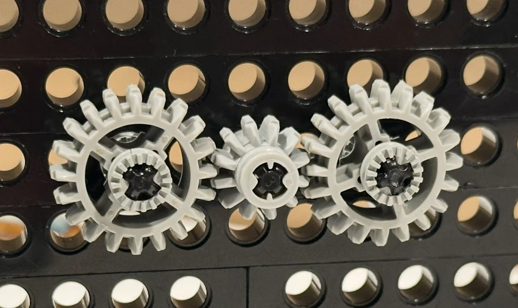
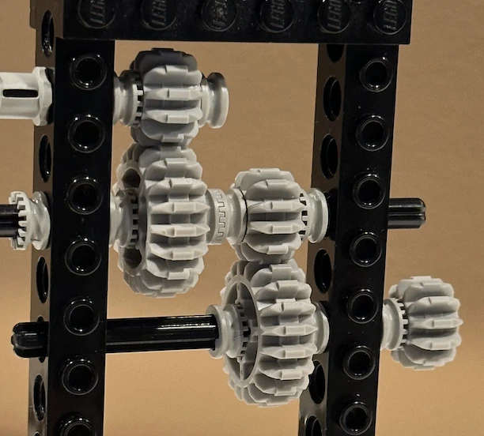
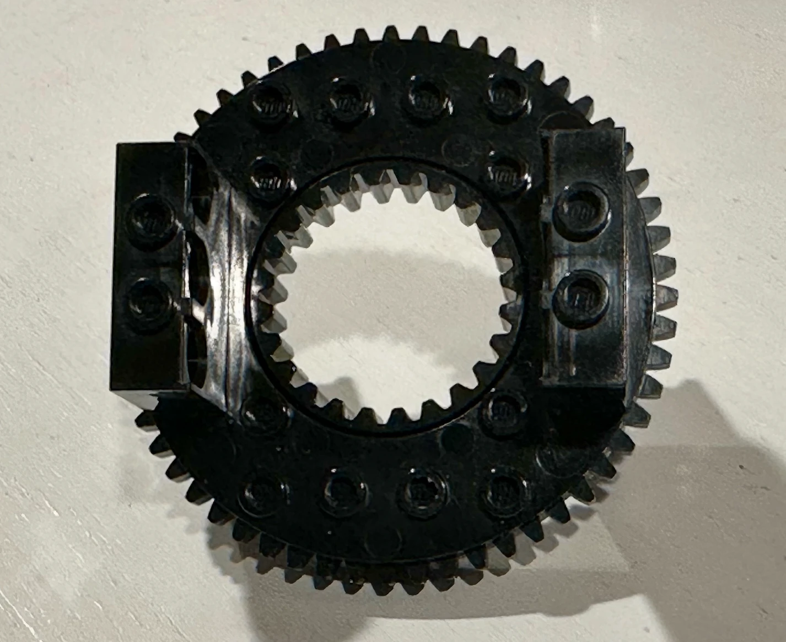
Using Lego Technic (or any compatible gear set), build a simple gear train and measure it rather than just calculating it: count the teeth on your driving and driven gears, predict the ratio, then turn the input a fixed number of times and count how many times the output actually turns.
Now add a third gear as an idler between the two. Does the ratio you measured change? Does the direction of rotation change? Push the gear train further: how many gears can you add in a compound train before backlash and friction losses make your prediction visibly wrong?
Students must be able toIdentify components of pulley systems, and outline how they are used providing examples.
Belt and chain drives transmit rotary power between two or more shafts that are physically separated (unlike gears, which require direct tooth-to-tooth contact).
Belt drives use a continuous flexible belt looped over two or more pulleys. Power transmission relies on friction between the belt and pulley surface. The belt cross-section (flat, V, or toothed) determines how the friction is generated:
Belt drive speed ratio: Speed ratio = diameter of driven pulley / diameter of driving pulley. A 200 mm driven pulley driven by a 100 mm pulley runs at half the speed of the driving pulley with double the torque.
Historical use: 19th-century factories used a single steam-driven lineshaft running the length of the factory ceiling. Individual machines were connected to the lineshaft by their own belts and pulleys, each with a different pulley ratio to run at the correct speed. The belt drive was the power distribution system of the Industrial Revolution.
Modern belt drive applications: Conveyor belts, vehicle alternator drives, lathe and drill press drives, treadmill decks, gym equipment.
Chain drives use a continuous loop of chain links engaging with the teeth of sprocket wheels. Power is transmitted by meshing (mechanical interlocking), not friction. This eliminates slip and allows precise speed ratios.
Applications: Bicycles (the classic example: sprocket on pedal crank drives sprocket on rear wheel via chain); motorcycles; industrial conveyors; timing chains in engines; agricultural machinery.
The bicycle chain drive is elegant in its simplicity: changing sprocket sizes (the derailleur system) changes the gear ratio without any gear contact or noise, and the chain is easily replaced when worn.
Students must be able toIdentify different shaped cams (pear, circular, triangular, eccentric, oval and snail) and outline how they are used providing examples.
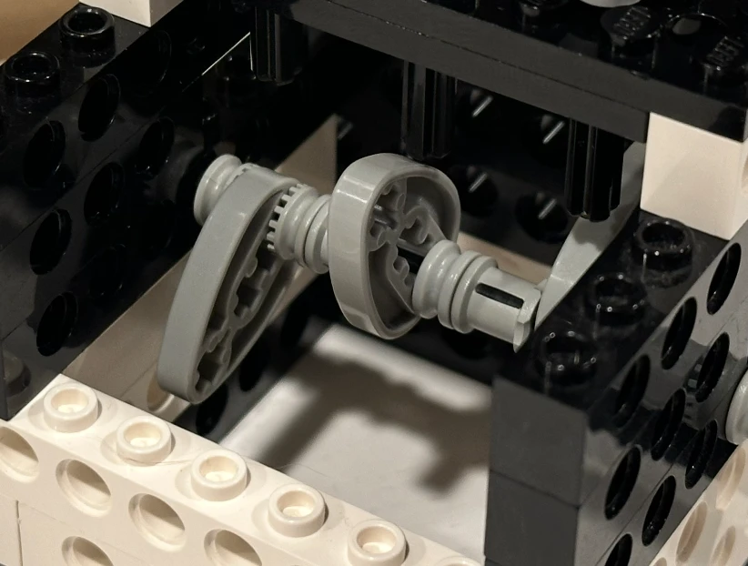
A cam is a specially shaped plate or cylinder mounted on a rotating shaft. As the shaft turns, a follower (a rod or lever resting against the cam surface) traces the cam profile and converts the rotary motion into a controlled reciprocating or oscillating motion. The exact motion of the follower depends entirely on the cam's shape (profile).
Follower types: Knife-edge (precise, wears quickly), flat-faced (lower surface pressure, less wear), roller (reduced friction, common in engines), and spherical (for curved cam surfaces).
The six standard cam shapes and the motion each produces:
Agricola's 1556 waterwheel-powered ore crushers used snail or lobe cams on a rotating shaft to repeatedly lift and drop heavy hammers. The same cam-and-follower principle powers the valves in every petrol and diesel engine today.
Students must be able toIdentify the three types of levers (1st class, 2nd class and 3rd class) and the position of the Load (L), Effort (E) and the Fulcrum, and outline how they are used providing examples.
A lever is a rigid beam that rotates about a fixed point called the fulcrum. A force called the effort is applied at one point to move a load at another. The lever's class depends on the relative positions of these three elements.
Mechanical advantage of a lever:
MA = Effort arm length / Load arm length
Where the effort arm is the distance from the fulcrum to where effort is applied, and the load arm is the distance from the fulcrum to the load.
First-class lever (F–L–E or E–F–L): The fulcrum is between the load and the effort. MA can be greater than, equal to, or less than 1 depending on the relative arm lengths.
Second-class lever (F–L–E): The load is between the fulcrum and the effort. The effort arm is always longer than the load arm, so MA is always > 1. A smaller effort can always lift a larger load, but the effort point must travel further than the load.
Third-class lever (F–E–L): The effort is between the fulcrum and the load. The effort arm is always shorter than the load arm, so MA is always < 1. The user must apply more force than the load, but the load moves faster and travels further than the effort point. Third-class levers trade force for speed and range of motion.
Third-class levers dominate in the human body because evolution prioritises speed and range of limb movement over force multiplication; most powerful muscles achieve force through size, not lever geometry.
Students must be able toIdentify parallel, reverse and bell crank linkages, and outline how they are used providing examples.
A linkage is a system of rigid bars (links) connected by pivots (pins or hinges). Unlike gears and belts, linkages do not transmit continuous rotary motion; they guide specific paths of movement, constrain relative motion between parts, or convert one motion type into another over a limited range.
1. Parallel linkage: All links remain parallel to each other throughout the motion. The output member moves in the same direction as the input member, but maintains the same orientation (it does not rotate).
2. Reverse linkage: The output member moves in the opposite direction to the input. A central pivot point reverses the motion.
3. Bell-crank linkage: Changes the direction of motion or force by approximately 90°. An L-shaped lever (the bell crank) has its pivot at the corner, so a horizontal input becomes a vertical output, or vice versa.
Linkage design principle: The geometry of the pivot points and link lengths determines the path, speed, and force amplification of the output. Changing the ratio of the bell-crank arms changes the mechanical advantage; changing the length ratio in a parallel linkage changes the speed ratio. Linkages are versatile because they guide motion with no friction in the transmission itself (only at the pivot pins), unlike belt and gear systems.
Ten questions covering the learning objectives for this topic. Select one answer per question, then click "Check all answers" to see your score and the explanations.
A domestic sewing machine is driven by a single motor. Its output must move the needle up and down, feed the fabric forward in steps, and rotate the bobbin hook beneath the plate, all in a fixed relationship to each other so that the hook catches the thread loop at the moment the needle begins to rise.
Table 1: Motion at each output of the sewing machine
| Component | Motion | Driven by |
|---|---|---|
| Motor shaft | Rotary | — |
| Needle bar | Reciprocating | Crank on the main shaft |
| Feed dog | Oscillating and reciprocating | Two cams on the main shaft |
| Bobbin hook | Rotary, 2 turns per needle stroke | Toothed belt from the main shaft |
| Thread take-up lever | Oscillating | Linkage from the crank |
(a) State the type of motion converted by the crank on the main shaft, see Table 1. [1]
(b) Outline why the feed dog requires two cams rather than one, see Table 1. [2]
(c) Explain why every output is driven from one main shaft rather than by separate motors, see Table 1. [3]
(a) Rotary motion to reciprocating motion.
(b) The feed dog has to move in two directions at once: it rises and falls to grip and release the fabric, and it moves forward and back to carry the fabric along. A single cam gives one displacement per rotation, so two are needed, one driving the vertical lift and one driving the horizontal advance, and the offset between them produces the looping path that grips only on the forward stroke.
(c) The requirement is not that the outputs move but that they move in a fixed relationship to each other, and a single shaft enforces that relationship mechanically. The hook has to arrive at the thread loop at the instant the needle starts to rise, and a few degrees of error breaks the stitch, so the timing has to be exact and repeatable at every speed from a single slow stitch to over a thousand a minute. Because the cams, crank and belt pulley are all fixed to one shaft, their phase relationship is set by geometry when the machine is built and cannot drift. Separate motors would have to be synchronised electronically, which needs sensors, a controller and power for each one, and would still lose timing if any motor stalled or lagged under load. The mechanical solution also costs far less, since one motor and a set of cams is cheaper than four motors and a control system, and it fails safely, because the whole machine stops together rather than continuing to drive a needle into a stationary hook.
(a) There are four types of motion involved in mechanical systems: linear, reciprocating, oscillating and rotary.
• Rotary to reciprocating ✓
Award [1] for the correct motion conversion up to [1 max]. Both parts of the conversion are required.
(b) The shape of a cam dictates the type of motion.
• The feed dog must move in two directions at once ✓
• It rises and falls to grip and release the fabric ✓
• It advances and returns to carry the fabric along ✓
• One cam produces one displacement per rotation ✓
• Two cams give independent vertical and horizontal components ✓
• The phase offset between them produces the looping path ✓
• The loop is what makes the dog grip only on the forward stroke ✓
Award [1] for each relevant brief point on why two cams are needed up to [2 max].
(c) The four types of motion can be combined to create simple or complex mechanical systems.
• The requirement is a fixed relationship between outputs, not merely that each moves ✓
• A single shaft enforces that relationship mechanically ✓
• The hook must reach the thread loop as the needle begins to rise ✓
• A few degrees of error breaks the stitch ✓
• Timing must hold from one slow stitch to over a thousand a minute ✓
• Cams, crank and pulley fixed to one shaft have a phase set by geometry ✓
• That phase is fixed at manufacture and cannot drift ✓
• Separate motors would need sensors, a controller and power for each ✓
• Electronic synchronisation still loses timing if a motor stalls or lags under load ✓
• One motor and a set of cams costs far less than four motors and a control system ✓
• The machine fails safely, stopping together rather than driving a needle into a stationary hook ✓
Award [1] for each relevant reason / cause explaining the single shaft arrangement up to [3 max]. Award a maximum of [2] where the response argues only from cost.
A bicycle derailleur moves the chain between sprockets of different sizes on the rear wheel. The rider selects a sprocket; the chain then transmits the rotation of the pedal cranks to the wheel.
Table 2: Gear combinations on a touring bicycle, 700c wheel of 2.10 m circumference
| Combination | Chainring teeth | Sprocket teeth | Velocity ratio | Wheel travel per crank turn |
|---|---|---|---|---|
| Lowest | 30 | 34 | 1.13 : 1 | 1.85 m |
| Middle | 40 | 19 | 1 : 2.11 | 4.43 m |
| Highest | 50 | 11 | 1 : 4.55 | 9.55 m |
(a) State the type of mechanical system used to transmit rotation from the chainring to the sprocket. [1]
(b) Apply the relationship between velocity ratio and mechanical advantage to describe why the lowest combination is used for climbing, see Table 2. [2]
(c) Justify providing a range of gear combinations rather than a single well-chosen ratio, see Table 2. [3]
(a) A chain drive.
(b) In the lowest combination a 30-tooth chainring drives a 34-tooth sprocket, so the wheel turns slightly slower than the cranks. Trading output speed for output force is what produces mechanical advantage, so the force the rider applies to the pedals is multiplied at the wheel, which is what a climb requires. The wheel travels 1.85 m per crank turn against 9.55 m in the highest gear, so the rider makes roughly five times as many pedal revolutions for the same distance and does the same total work spread over more, lighter strokes.
(c) A single ratio would have to be a compromise across conditions that differ by a factor of five, and Table 2 shows the range is 1.85 m to 9.55 m per crank turn. The reason a compromise fails is that the rider is the engine, and human muscle produces useful power only over a narrow band of pedalling rates, roughly 70 to 100 revolutions a minute. Outside that band the rider either grinds at high force and low speed, which fatigues the muscles quickly, or spins at low force and high speed, which wastes effort. The gears exist to keep the rider inside that band while the road speed and gradient change, so what is being held constant is the cadence, not the output. The load itself also varies enormously, since a climb into a headwind may demand several times the force of a descent, and the wheel is the only place that force can be adjusted without changing the rider. A single ratio chosen for the flat would be unusable on a steep climb, and one chosen for climbing would leave the rider spinning uselessly on the flat, so the range is what makes the bicycle work across the whole route.
(a) • Chain drive ✓
• Chain and sprocket drive ✓
Award [1] for the correct system up to [1 max]. Do not credit belt drive or gear train.
(b) Mechanical systems can provide a mechanical advantage to the user, and are used to increase or decrease the speed, direction or power of a motion.
• A 30-tooth chainring drives a 34-tooth sprocket, so the wheel turns slower than the cranks ✓
• Velocity ratio is 1.13 : 1, a reduction ✓
• Trading output speed for output force produces mechanical advantage ✓
• Pedal force is multiplied at the wheel, which is what a climb requires ✓
• The wheel travels 1.85 m per crank turn against 9.55 m in the highest gear ✓
• The rider makes about five times as many revolutions for the same distance ✓
• The same total work is spread over more, lighter strokes ✓
Award [1] for each relevant detail applying the velocity ratio relationship to the climbing case up to [2 max]. Credit responses that quote values from Table 2.
(c) Mechanical systems are used to increase or decrease the speed, direction or power of a motion.
• A single ratio must compromise across conditions differing by a factor of five ✓
• Table 2 spans 1.85 m to 9.55 m of wheel travel per crank turn ✓
• The rider is the engine, and human muscle produces useful power over a narrow band of cadence ✓
• That band is roughly 70 to 100 revolutions per minute ✓
• Below it the rider grinds at high force and fatigues quickly ✓
• Above it the rider spins at low force and wastes effort ✓
• The gears hold cadence constant while road speed and gradient change ✓
• What is held constant is the input rate, not the output ✓
• Load varies enormously between a headwind climb and a descent ✓
• The wheel is the only place force can be adjusted without changing the rider ✓
• A ratio chosen for the flat is unusable on a steep climb, and the reverse ✓
Award [1] for each valid reason / piece of evidence justifying a range of ratios up to [3 max]. Award a maximum of [2] where the response does not identify the rider's limited cadence range as the reason.
A car door window is raised and lowered by a mechanism inside the door. A small electric motor drives the glass along a vertical path. The glass must stay parallel to the frame throughout, seal against a rubber channel at the top, and stop if an obstruction is met.
Older cars used a manual crank turned by the occupant.
(a) List two types of motion present as the motor raises the car window glass. [2]
Two mechanisms are in common use.
Table 3: Two window mechanisms compared
| Scissor (cross-arm) | Cable (Bowden) | |
|---|---|---|
| Principle | Two arms crossed on a central pivot, one end in a fixed track | Cable wound on a drum pulls a carrier along a rail |
| Motion at the glass | Linear vertical | Linear vertical |
| Parts count | Higher | Lower |
| Mass | 2.6 kg | 1.4 kg |
| Force at full travel | Varies through the stroke | Near constant |
| Failure mode | Wear at pivots, gradual | Cable fray or snap, sudden |
(b) Outline why the scissor mechanism's output force varies through the stroke, see Table 3. [2]
The motor drives the mechanism through a worm gear. A worm can turn its wheel, but the wheel cannot turn the worm.
(c) Describe why a worm gear is used in this application, see Table 3. [2]
A designer proposes removing the worm gear and replacing it with a spur gear train of the same ratio, controlled by an electronic brake that holds the window in position.
(d) Explain the consequences of replacing the worm gear with a spur gear train and an electronic brake, see Table 3. [4]
(a) Rotary, at the motor and the gears; and linear, at the glass.
(b) The mechanism is a linkage, and the angle between the crossed arms changes continuously as the glass rises. The effective lever arm through which the driven arm acts therefore changes with position, so the same torque at the pivot produces a different force at the glass at the bottom of the stroke than at the top.
(c) A worm gear gives a large reduction in a single compact stage, which suits a mechanism that has to fit inside a door panel and lift heavy glass from a small motor. More importantly it cannot be back-driven, so the weight of the glass cannot turn the mechanism and the window stays where it is left with the motor unpowered and no brake or catch required.
(d) The change replaces a property of the mechanism with a function of the control system, and that is the whole of its consequence.
The gains are real but modest. Spur gears are far more efficient than a worm, which loses a large fraction of its input to sliding friction between the worm and the wheel, so the motor could be smaller or the window faster for the same power. The mechanism would also run more quietly and generate less heat.
The losses are structural. The worm's inability to be back-driven is not a side effect, it is the feature that holds the window shut. Spur gears back-drive freely, so the moment the brake is unpowered the glass falls under its own weight. That converts a window that is closed by geometry into one that is closed only while a system is working, and the failure mode changes from a window that becomes hard to move into a window that drops open. In a parked car that is a security failure, and a car left for weeks would drain the battery holding a brake or would open when it went flat.
It also gets worse in the situations that matter. The brake must hold against the glass's weight indefinitely, in a door that reaches high temperatures in the sun and is subjected to slamming and vibration, and the crash case is the worst of all, because a door impact could cut power to the brake at the moment the glass most needs to stay in place. Table 3 already shows the design concern in this component is failure mode, with the cable mechanism marked down for failing suddenly rather than gradually, and this proposal introduces a second sudden failure into a different part of the same system.
The efficiency gain is not worth it. Holding position with no power is doing safety-critical work for free, and replacing it with a powered brake means adding components, a control strategy and a fallback for every way that brake can fail, which is likely to cost more than the worm gear saved.
(a) There are four types of motion involved in mechanical systems.
• Rotary, at the motor and gears ✓
• Linear, at the glass ✓
• Oscillating, at the scissor arms ✓
• Reciprocating, if the glass is considered over a full up and down cycle ✓
Award [1] for each relevant type of motion up to [2 max].
(b) Linkages are used to change the direction of a movement, alter the magnitude of a force or make parts of a system move in a particular way.
• The mechanism is a linkage, not a fixed ratio drive ✓
• The angle between the crossed arms changes continuously as the glass rises ✓
• The effective lever arm changes with position ✓
• The same torque produces a different force at the glass at different heights ✓
• The mechanical advantage of the linkage is a function of its geometry at each instant ✓
• Force is typically lowest where the arms are closest to fully extended or closed ✓
• The motor must therefore be sized for the worst position, not the average ✓
Award [1] for each relevant brief point on the varying output force up to [2 max]. The response must refer to changing geometry for full marks.
(c) Gears transmit rotary motion from one gear shaft to another, and are used to change speed, direction or power.
• Gives a large reduction in a single compact stage ✓
• Fits within the confined space of a door panel ✓
• Allows heavy glass to be lifted by a small motor ✓
• Turns the drive through 90°, suiting the layout inside a door ✓
• Cannot be back-driven, so the glass weight cannot turn the mechanism ✓
• The window stays where it is left with the motor unpowered ✓
• No separate brake, catch or ratchet is required ✓
• The window cannot be forced down from outside, which is a security benefit ✓
Award [1] for each detail, leading to an account of why a worm gear is used, up to [2 max]. Credit the non-reversibility for full marks.
(d) Mechanical systems convert an input into an output, and the properties of a mechanism can perform functions that would otherwise require a control system.
Gains:
• Spur gears are far more efficient than a worm, which loses much of its input to sliding friction ✓
• A smaller motor could be used, or the window run faster for the same power ✓
• Quieter running and less heat generated ✓
• Fewer losses means lower current draw ✓
Losses:
• Non-reversibility is the feature that holds the window shut, not a side effect ✓
• Spur gears back-drive freely, so the glass falls under its own weight when unpowered ✓
• A window closed by geometry becomes one closed only while a system works ✓
• The failure mode changes from hard to move into drops open ✓
• A parked car with a dropped window is a security failure ✓
• Holding a brake powered for weeks would drain the battery, and a flat battery opens the window ✓
Worst cases:
• The brake must hold indefinitely against the glass weight ✓
• Door interiors reach high temperatures in sun, degrading brake performance ✓
• Slamming and vibration act on the brake continuously ✓
• A crash could cut power at the moment the glass most needs to stay in place ✓
• Table 3 shows failure mode is already the design concern in this component ✓
• The proposal adds a second sudden failure to the same system ✓
Judgment:
• Holding position with no power is safety-critical work done for free ✓
• Replacing it requires components, a control strategy and a fallback for each failure of the brake ✓
• The added complexity is likely to cost more than the worm gear saved ✓
Award [1] for each relevant detail / reason / cause relating to the consequences of the substitution up to [4 max]. Award a maximum of [2] where the response does not identify the loss of non-reversibility. Credit responses that reach a judgment.
Linking Questions
Pop the lid off a press-down lever salad spinner and the mechanism inside is a compact example of motion conversion. Pressing down on the lever is a linear motion. Inside, a small cam or crank converts that downward push into rotary motion as it turns a spindle or shaft, the same basic idea used in many hand-powered machines. A return spring lifts the lever back up after each press, ready to go again.
That turning shaft drives a small gear meshed with a much larger gear fixed to the basket shaft, a simple gear ratio that trades speed for distance: one press produces several rotations of the basket for every turn of the cam spindle, spinning the inner colander fast enough that centrifugal force flings water off the lettuce and through the holes into the outer bowl. A one-way mechanism or locking pawl prevents the basket from unwinding backward between presses, so each push adds more speed instead of cancelling out the last one.
Another important thing to note, especially if you haven't used this particular kitchen device: it is very fun to use. No, you don't need to remember that for the test, but you give one a try!